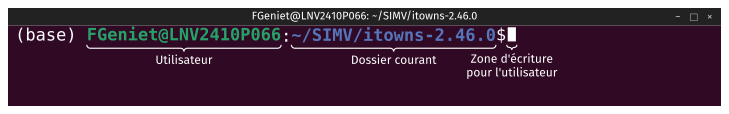
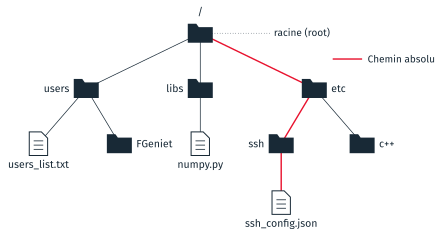
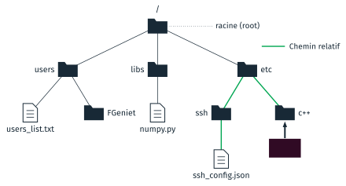

La ligne de commande#
Cette partie présente le terminal, le logiciel dans lequel on tape des commandes, puis la forme commune à toutes les commandes et celles qui servent à se déplacer dans les dossiers et à manipuler des fichiers. Elle reprend ensuite le chemin d’un fichier, vu au cours 1, tel qu’il s’écrit dans le terminal, et les motifs qui désignent plusieurs fichiers à la fois. La partie n’a pas de TD propre : ses commandes servent dans tous les TD de la séance, à partir du TD 3a.
Le terminal#
- Un terminal est une interface textuelle entre la personne et l’ordinateur
on y tape une commande au clavier, on la valide par Entrée, et le résultat s’affiche en texte, sous la commande. Les logiciels à fenêtres, comme l’explorateur de fichiers, sont des interfaces graphiques : on y agit avec la souris, sur des boutons et des menus.
Le programme qui lit les commandes tapées dans le terminal et les exécute s’appelle un interpréteur de commandes, ou shell. Chaque interpréteur a son langage. Celui de la séance est bash, l’interpréteur par défaut de Linux, disponible aussi sous macOS. Sous Windows, l’interpréteur par défaut est PowerShell, dont les commandes s’écrivent autrement ; bash y est installé avec git, dans une fenêtre appelée Git Bash. La page Git et Git Bash décrit comment l’ouvrir sur les postes de la salle.
Le terminal affiche une invite avant chaque commande : une ligne qui indique l’utilisateur et le dossier dans lequel il travaille.

L’invite de bash sur un poste Linux : l’utilisateur et la machine, le dossier
courant, puis le signe $ après lequel on écrit.#
L’invite contient trois informations.
L”utilisateur et le nom de la machine, séparés par
@.Le dossier courant, le dossier dans lequel le terminal travaille. Une commande qui nomme un fichier sans donner son chemin complet le cherche dans ce dossier. Le signe
~désigne le dossier personnel de l’utilisateur.Le signe
$, après lequel la commande s’écrit.
Le préfixe (base) est le nom de l’environnement conda actif, vu au cours 1.
Dans Git Bash, sur un poste de la salle, l’invite tient sur deux lignes : la
première donne l’utilisateur, la machine et le dossier courant, sous la forme
eleve@POSTE MINGW64 ~/Desktop/info01 ; la seconde commence par $.
La forme d’une commande#
Toutes les commandes bash s’écrivent de la même façon : le nom de la commande, puis des options, puis des arguments, séparés par des espaces.
commande [-o] [--option-longue] <argument>
- Commande
Le nom du programme à lancer :
ls,cd,git.- Option
Un réglage qui modifie ce que fait la commande. Une option courte est une lettre précédée d’un tiret,
-a; une option longue est un mot précédé de deux tirets,--all. Plusieurs options courtes se regroupent derrière un seul tiret :-lavaut-l -a.- Argument
Ce sur quoi la commande agit, le plus souvent un nom de fichier ou de dossier.
Dans la documentation des commandes, et dans celle-ci, les crochets [ ]
entourent ce qui est facultatif, et les chevrons < > ce qui est à remplacer
par une valeur. On ne les tape pas : cd <dossier> se tape cd travail.
Presque toutes les commandes décrivent leurs options quand on leur passe
l’option --help :
ls --help
Les commandes de base#
Les commandes suivantes font au clavier ce que l’explorateur de fichiers fait à la souris.
Commande |
Ce qu’elle fait |
|---|---|
|
affiche le chemin du dossier courant |
|
liste les fichiers et sous-dossiers d’un dossier, par défaut le dossier courant |
|
change de dossier courant |
|
crée un dossier |
|
crée un fichier vide |
|
copie un fichier ; avec |
|
déplace un fichier ou un dossier, ou le renomme |
|
supprime un fichier ; avec |
Dans le dossier de la séance, ls affiche le nom des dossiers de TD :
$ ls
3a_premier_depot 4a_branches 4c_conflits
$ ls 4c_conflits/depart
main_operations.py main_regex.py
ls n’affiche rien d’autre que les noms. Une commande qui réussit sans
résultat à montrer, comme cd ou mkdir, n’affiche rien du tout : le
terminal affiche seulement l’invite suivante. Une commande qui échoue affiche
un message d’erreur.
Avertissement
rm supprime sans demander de confirmation et sans passer par la corbeille.
Un fichier supprimé par rm ne se récupère pas. Vérifier le dossier courant
avec pwd, et la liste des fichiers visés avec ls, avant de lancer rm.
La touche Tab complète un nom de fichier ou de dossier commencé : taper cd 4c, puis Tab, écrit cd 4c_conflits/. La flèche vers le haut rappelle les
commandes précédentes.
Les chemins dans le terminal#
Le cours 1 a défini le chemin d’un fichier, absolu ou relatif (Logiciels et
formats de fichier). Dans
bash, un chemin s’écrit avec des barres obliques, /, sous Linux et macOS
comme dans Git Bash sous Windows.
Les fichiers et les dossiers forment un arbre. La racine de l’arbre est un
dossier qui contient tous les autres, et que bash note /.

Le chemin absolu de ssh_config.json part de la racine : /etc/ssh/ssh_config.json.#
Un chemin absolu part de la racine, et commence donc par /. Il désigne
le même fichier quel que soit le dossier courant du terminal. Sur l’arbre
ci-dessus, le chemin absolu de ssh_config.json est
/etc/ssh/ssh_config.json.

Depuis le dossier c++, le chemin relatif de ssh_config.json remonte
d’un dossier, puis descend : ../ssh/ssh_config.json.#
Un chemin relatif part du dossier courant du terminal. Deux points, ..,
désignent le dossier parent, et un point, ., le dossier courant. Si le
terminal est ouvert dans c++, le chemin relatif de ssh_config.json est
../ssh/ssh_config.json : .. remonte dans etc, puis ssh/ descend dans
ssh. Le même chemin tapé depuis un autre dossier désigne un autre fichier,
ou aucun.
Sous Windows, Git Bash écrit le disque C: comme un dossier de la racine,
/c. Le dossier de la séance sur les postes de la salle,
C:\Users\eleve\Desktop\info01\cours2, s’écrit donc
/c/Users/eleve/Desktop/info01/cours2, ou ~/Desktop/info01/cours2, puisque
~ désigne /c/Users/eleve. Dans les chemins relatifs, rien ne change : cd ../4a_branches fonctionne de la même façon sous les trois systèmes.
Les fichiers cachés#
Un fichier ou un dossier dont le nom commence par un point est caché :
ls ne l’affiche pas, et l’explorateur de fichiers non plus. Les logiciels y
enregistrent leurs réglages et leurs données de travail. Git enregistre les
siennes dans un dossier caché, .git, sujet de la partie suivante ; SSH
enregistre les clés du cours 5 dans .ssh.
L’option -a de ls affiche aussi les éléments cachés :
$ ls -a
. .. README.md td_3a_premier_depot.pdf travail
La liste commence par . et .., le dossier courant et son parent, que tout
dossier contient. Dans l’explorateur de fichiers de Windows, le menu
Affichage, Afficher, Éléments masqués fait apparaître les éléments cachés ;
sous Ubuntu, le raccourci est Ctrl + H.
Désigner plusieurs fichiers : les motifs#
Un motif désigne en une fois tous les fichiers dont le nom a une certaine forme. Bash remplace le motif par la liste des noms qui lui correspondent, avant de lancer la commande. Trois caractères ont un sens particulier.
Caractère |
Ce qu’il remplace |
Exemple |
Ce que l’exemple désigne |
|---|---|---|---|
|
n’importe quelle suite de caractères, y compris aucune |
|
tous les fichiers du dossier courant dont le nom finit par |
|
exactement un caractère |
|
|
|
un seul caractère, pris dans la liste entre crochets |
|
|
Un motif peut contenir des / : */depart/*.py désigne tous les fichiers
.py des dossiers depart des sous-dossiers du dossier courant.
$ ls */depart/*.py
4a_branches/depart/main_base.py
4c_conflits/depart/main_operations.py
4c_conflits/depart/main_regex.py
Entre crochets, un tiret donne un intervalle : reunion_[0-9][0-9].txt
désigne les fichiers reunion_ suivis de deux chiffres. Un * ne traverse
pas les dossiers : /users/FGeniet/*.jpg désigne les images du dossier
FGeniet, et pas celles de ses sous-dossiers.
Note
Les diapositives appellent ces motifs des expressions régulières. Les deux
existent et se ressemblent, mais leur syntaxe diffère. Les motifs, en anglais
glob, sont ceux de bash et ne servent qu’à désigner des noms de fichiers.
Les expressions régulières servent à chercher un texte dans un autre, dans la
commande grep ou le module re de Python ; * y signifie « le caractère
précédent, répété zéro fois ou plus ». Le TD 4c en emploie une, en Python.